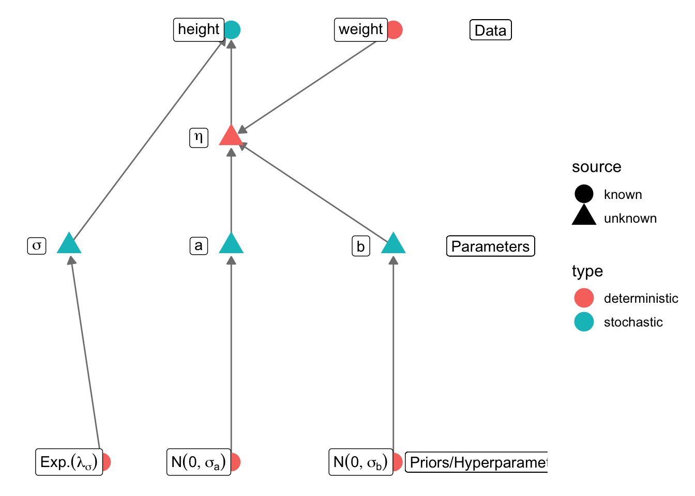

!Kung people height and weight model
29.11.2024
For these exercises, you will need the Howell1 dataset
from the rethinking package. We don’t need the rest of the
package, so we will just download the data directly from the package’s
github repository
library(data.table)
Howell1 = fread("https://github.com/rmcelreath/rethinking/raw/master/data/Howell1.csv")These data, collected by anthropologist Nancy Howell in the 1960s,
provide the age, height, weight, and sex sampled from a population of
!Kung in Dobe (Namibia & Botswana). Note that the male
variable is categorical, and is equal to 1 if the subject is male, and 0
if female.
- Do some graphical data exploration. The data are multivariate, so multiple plots may be necessary.
- Design a regression model with
heightas the response (i.e., outcome, y) variable. For your initial model, use onlyweightas a predictor. | a. Build a graphical model as shown in lecture.
library("igraph")
library("ggnetwork")
library(ggplot2)
gr = graph_from_literal(height+-η,
weight-+η,
σ-+height,
a-+η, b-+η,
"E(lam_σ)"-+σ,
"N(0,σ_a)"-+a,
"N(0,σ_b)"-+b)
V(gr)$type = c("stochastic", rep("deterministic", 2), rep("stochastic", 3), rep("deterministic", 3))
V(gr)$source = c("known", "unknown", "known", rep("unknown", 3), rep("known", 3))
layout = rbind(height = c(0, 1), eta = c(0,0.5), weight = c(0.5,1), sigma = c(-0.5,0), a = c(0,0),
b = c(0.5,0), sig_prior = c(-0.4,-1), a_prior = c(0,-1), b_prior = c(0.5,-1))
n = ggnetwork(gr, layout=layout)
nlabs = c(expression(sigma), expression(Exp.(lambda[sigma])), expression(N(0,sigma[a])),
"a", expression(eta), expression(N(0,sigma[b])), "b", "weight", "height")
ggplot(n, aes(x = x, y = y, xend = xend, yend = yend)) +
geom_edges(colour="gray50", arrow=arrow(length = unit(6, "pt"),
type = "closed")) +
theme_blank() + geom_nodes(aes(color=type, shape = source), size=6) +
geom_nodelabel(label = nlabs, fontface = "bold", nudge_x=-0.1) +
geom_label(aes(x=1.3, y=1), label = "Data") +
geom_label(aes(x=1.3, y=0.5), label = "Parameters") +
geom_label(aes(x=1.3, y=0), label = "Priors/Hyperparameters") +
xlim(-0.1, 1.4)
\[ \begin{aligned} height & \sim \mathcal{N}(\eta, \sigma) \\ \eta & = a + b \times weight \\ a & \sim \mathcal{N}(0, \sigma_a) \\ b & \sim \mathcal{N}(0, \sigma_b) \\ \sigma & \sim \mathrm{Exponential}(\lambda_\sigma) \end{aligned} \]
model {
height ~ normal(eta, sigma);
sigma ~ exponential(lam_sig);
a ~ normal(0, sig_a);
b ~ normal(0, sig_b);
}
optimizing.data {
int <lower = 1> n;
vector [n] height;
vector [n] weight;
// priors
real <lower = 0> lam_sig;
real <lower = 0> sig_a;
real <lower = 0> sig_b;
}
parameters {
real a;
real b;
real <lower = 0> sigma;
}
transformed parameters {
vector [n] eta;
eta = a + b * weight;
}
model {
height ~ normal(eta, sigma);
sigma ~ exponential(lam_sig);
a ~ normal(0, sig_a);
b ~ normal(0, sig_b);
}
generated quantities {
// prediction, for part 3c
// 41 is the hypothetical weight for this example
real prediction_3c = normal_rng(a + b * 41, sigma);
}
library(rstan)
kung_lm = stan_model("stan/kung_simple_lm.stan")kung_lm_data = list(
height = Howell1$height,
weight = Howell1$weight,
n = nrow(Howell1),
# very vague prior for the variance
lam_sig = 0.01,
# choose intercept prior based on what I think is a plausible/possible range of
# values for the intercept. this is pretty vague!
sig_a = 500,
# the slope can have a smaller prior; a value of b = 20 (two standard deviations) implies
# a 20-cm increase in height for every 1 kg increase in body weight, which is very large!
sig_b = 10
)
kung_lm_map = optimizing(kung_lm, data = kung_lm_data)$par
kung_lm_map[1:3] # all of the etas are also included here, but we don't need them## a b sigma
## 75.437090 1.764267 9.345284ggplot(Howell1) + geom_point(aes(x=weight, y = height)) +
geom_abline(intercept = kung_lm_map[1], slope = kung_lm_map[2]) +
theme_minimal()- Plotting this model will likely reveal it to be inadequate, because there is a substantial “curve” in the height-weight relationship. Repeat the exercise for #2, but update your model to better predict height. Possible approaches might include filtering the data (but I encourage you to use it all if possible), writing a curvilinear equation, or adding additional predictors. Compare the results of your attempts, and choose a single model that you think works “best.” Repeat a-e above for this model. Note any changes in the relationship between height and weight caused by your changes to the model. Additionally:
One relatively simple approach is to use a curvilinear model that allows height to increase more or less linearly with weight when weight is small, but levelling off for larger values. The logic is that people only grow so much vertically, but can continue to gain weight even after they have reached their maximum height. We can accomplish this by log-transforming weight.
data {
int <lower = 1> n;
vector [n] height;
vector [n] weight;
// priors
real <lower = 0> lam_sig;
real <lower = 0> sig_a;
real <lower = 0> sig_b;
}
parameters {
real a;
real b;
real <lower = 0> sigma;
}
transformed parameters {
vector [n] eta;
eta = a + b * log(weight);
}
model {
height ~ normal(eta, sigma);
sigma ~ exponential(lam_sig);
a ~ normal(0, sig_a);
b ~ normal(0, sig_b);
}
generated quantities {
// prediction, for part 3c
// 41 is the hypothetical weight for this example
real prediction_3c = normal_rng(a + b * log(41), sigma);
}
Another approach is to improve our model by adding predictors. Here, we can try to fit a model where the weight-height slope changes depending on the age of the person. We will also include the sex of the participants (without interactions), to see if this has any effect.
data {
int <lower = 1> n;
vector [n] height;
vector [n] weight;
vector [n] age;
vector [n] is_male;
// priors
real <lower = 0> lam_sig;
real <lower = 0> sig_a;
real <lower = 0> sig_b;
}
parameters {
real a;
real b_weight;
real b_age;
real b_interaction;
real b_male;
real <lower = 0> sigma;
}
transformed parameters {
vector [n] eta;
eta = a + b_weight * weight + b_age * age + b_interaction * weight .* age + b_male * is_male;
}
model {
height ~ normal(eta, sigma);
sigma ~ exponential(lam_sig);
a ~ normal(0, sig_a);
b_weight ~ normal(0, sig_b);
b_age ~ normal(0, sig_b);
b_interaction ~ normal(0, sig_b);
b_male ~ normal(0, sig_b);
}
generated quantities {
// prediction, for part 3c
// 41 is the hypothetical weight for this example
// 24 is the age
// the subject is female, so is_male=0
real prediction_3c = normal_rng(a + b_weight * 41 + b_age * 24 + b_interaction*24*41 + b_male * 0, sigma);
}
kung_lm_log = stan_model("stan/kung_lm_log.stan")
kung_mlr = stan_model("stan/kung_mlr.stan")sampling# add some variables we need for the multiple regression
kung_lm_data$age = Howell1$age
kung_lm_data$is_male = Howell1$male
fit_lm = sampling(kung_lm, data = kung_lm_data, refresh = 0)
fit_lm_log = sampling(kung_lm_log, data = kung_lm_data, refresh = 0)
fit_mlr = sampling(kung_mlr, data = kung_lm_data, refresh = 0)
# extract the posterior samples
samps_lm = as.matrix(fit_lm, pars = c("a", "b", "sigma"))
samps_lm_log = as.matrix(fit_lm_log, pars = c("a", "b", "sigma"))
samps_mlr = as.matrix(fit_mlr, pars = c("a", "b_weight", "b_age", "b_interaction", "b_male", "sigma"))
# plotting is a little challenging with curves, we will accomplish it by creating a counterfactual dataset
# the multiple regression is also difficult to visualise, so we will stick to the two univariate cases
plot_data = data.frame(weight = seq(min(Howell1$weight), max(Howell1$weight), length.out = 200))
plot_data$linear = median(samps_lm[,'a']) + median(samps_lm[,'b']) * plot_data$weight
plot_data$log = median(samps_lm_log[,'a']) + median(samps_lm_log[,'b']) * log(plot_data$weight)
cols = scales::hue_pal()(3)
ggplot(Howell1) + geom_point(aes(x=weight, y = height)) +
geom_line(data = plot_data, aes(x = weight, y = linear), col = cols[1], linewidth = 1.5) +
geom_line(data = plot_data, aes(x = weight, y = log), col = cols[2], linewidth = 1.5) +
theme_minimal()
These posterior distributions are relatively symmetric and unimodal, so we will use simple quantile intervals
## linear model
round(apply(samps_lm, 2, quantile, c(0.05, 0.95)),2)## parameters
## a b sigma
## 5% 73.69 1.72 8.93
## 95% 77.23 1.81 9.87## log-transformed model
round(apply(samps_lm_log, 2, quantile, c(0.05, 0.95)),2)## parameters
## a b sigma
## 5% -25.85 46.37 4.90
## 95% -21.33 47.67 5.43## multiple regression
round(apply(samps_mlr, 2, quantile, c(0.05, 0.95)),2)## parameters
## a b_weight b_age b_interaction b_male sigma
## 5% 57.67 2.13 1.47 -0.04 3.67 6.18
## 95% 60.99 2.25 1.67 -0.04 5.58 6.83The general approach here is use the posterior distribution of the parameters to infer the posterior distribution for the of this new case, while also accounting for natural variation (the residual standard error, sigma from the model). We can do this via simulation, either in R or Stan. Here we will look at both approaches.
In R, we extract the posterior distribution of each parameter, then draw samples from a normal distribution using the predicted mean and the standard deviation from the model.
weight = 41
age = 24
is_male = 0 # 0 codes female, 1 male
## linear model
# the '41' below is the weight, which is the only thing that is relevant for this model
pr_lm = rnorm(nrow(samps_lm), samps_lm[,'a'] + samps_lm[,'b'] * weight, samps_lm[,'sigma'])
## similar logic for the other two models
pr_lm_log = rnorm(nrow(samps_lm_log), samps_lm_log[,'a'] + samps_lm_log[,'b'] * log(weight), samps_lm_log[,'sigma'])
pr_mlr = rnorm(nrow(samps_mlr), samps_mlr[,'a'] + samps_mlr[,'b_weight'] * weight +
samps_mlr[,'b_age'] * age + samps_mlr[,'b_interaction'] * weight * age + samps_mlr[,'b_male'] * is_male,
samps_mlr[,'sigma'])
## next we examine how many cases fall within the interval we want
sum(pr_lm >= 130 & pr_lm <= 145) / length(pr_lm)## [1] 0.3645sum(pr_lm_log >= 130 & pr_lm_log <= 145) / length(pr_lm_log)## [1] 0.12175sum(pr_mlr >= 130 & pr_mlr <= 145) / length(pr_mlr)## [1] 0.2215## for a male, only one model will change
pr_mlr_male = rnorm(nrow(samps_mlr), samps_mlr[,'a'] + samps_mlr[,'b_weight'] * weight +
samps_mlr[,'b_age'] * age + samps_mlr[,'b_interaction'] * weight * age + samps_mlr[,'b_male'] * 1,
samps_mlr[,'sigma'])
sum(pr_mlr_male >= 130 & pr_mlr_male <= 145) / length(pr_mlr_male)## [1] 0.0785To do this in Stan, we used the generated quantities
block to create a simulated variable called prediction_3c.
All we need to do is extract this variable and look at its
quantiles.
pr_lm = as.matrix(fit_lm, pars = "prediction_3c")
pr_lm_log = as.matrix(fit_lm_log, pars = "prediction_3c")
pr_mlr = as.matrix(fit_mlr, pars = "prediction_3c")
sum(pr_lm >= 130 & pr_lm <= 145) / length(pr_lm)## [1] 0.36525sum(pr_lm_log >= 130 & pr_lm_log <= 145) / length(pr_lm_log)## [1] 0.12275sum(pr_mlr >= 130 & pr_mlr <= 145) / length(pr_mlr)## [1] 0.2375segments function (or
geom_errorbars in ggplot2) to see if you can
draw the intervals as vertical lines on the plot. Add a 1:1 line to the
plot. What does this plot tell you about your model fit? What is the
expected relationship for a “good” model?Our Stan model fortunately does this for us! The variable
eta is the predicted value for each data point. All we need
to do is extract it, then we can plot the median and quantile limits for
each one.
eta_lm = as.matrix(fit_lm, pars = "eta")
eta_lm_log = as.matrix(fit_lm_log, pars = "eta")
eta_mlr = as.matrix(fit_mlr, pars = "eta")
plot_data = data.frame(
height = Howell1$height,
height_pr_lm = apply(eta_lm, 2, median),
height_pr_lm_lower = apply(eta_lm, 2, quantile, 0.05),
height_pr_lm_upper = apply(eta_lm, 2, quantile, 0.95),
height_pr_lm_log = apply(eta_lm_log, 2, median),
height_pr_lm_log_lower = apply(eta_lm_log, 2, quantile, 0.05),
height_pr_lm_log_upper = apply(eta_lm_log, 2, quantile, 0.95),
height_pr_mlr = apply(eta_mlr, 2, median),
height_pr_mlr_lower = apply(eta_mlr, 2, quantile, 0.05),
height_pr_mlr_upper = apply(eta_mlr, 2, quantile, 0.95)
)
pl_lm = ggplot(data = plot_data) +
geom_point(aes(x = height, y = height_pr_lm), size = 0.4) +
geom_errorbar(aes(x = height, ymin = height_pr_lm_lower, ymax = height_pr_lm_upper)) +
theme_minimal() + ylab("Predicted Height") + xlab("Observed Height") +
geom_abline(intercept = 0, slope = 1, color = "blue", linewidth = 1.5)
pl_lm_log = ggplot(data = plot_data) +
geom_point(aes(x = height, y = height_pr_lm_log), size = 0.4) +
geom_errorbar(aes(x = height, ymin = height_pr_lm_log_lower, ymax = height_pr_lm_log_upper)) +
theme_minimal() + ylab("Predicted Height") + xlab("Observed Height") +
geom_abline(intercept = 0, slope = 1, color = "blue", linewidth = 1.5)
pl_mlr = ggplot(data = plot_data) +
geom_point(aes(x = height, y = height_pr_mlr), size = 0.4) +
geom_errorbar(aes(x = height, ymin = height_pr_mlr_lower, ymax = height_pr_mlr_upper)) +
theme_minimal() + ylab("Predicted Height") + xlab("Observed Height") +
geom_abline(intercept = 0, slope = 1, color = "blue", linewidth = 1.5)
gridExtra::grid.arrange(pl_lm, pl_lm_log, pl_mlr, ncol=3)Bonus
- Return to one of the plots you made showing height against weight.
It appears that the variance in height is not constant with respect to
weight. This is one of the key assumptions in linear regression, and you
probably made this implicitly in your model (the s parameter, the
standard deviation, is constant). However, Bayesian models need not be
so rigid.
- Can you design a model that allows the variance to increase as weight increases? Use whatever predictors for height that you think are best.
- Fit the model and compare the fit to your original model.
- Buried in the bottom of a field notebook, you find two cases that
were missing from the original dataset. The first is an individual with
a weight of 43.72; no height, age, or sex data is recorded. The second
is a 38-year-old female with a height of 135.
- Using the model from #3 above, can you predict a 90% credible interval for height of the first missing case? Is it easier if you use the model from #2?
- The second missing case is more interesting; we have the outcome of our model, but we are missing the weight. How could you estimate a 90% CI for weight, using the model from #3 (i.e., keeping height as the response variable)?